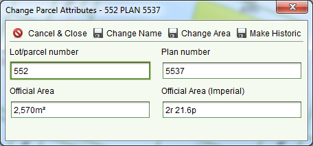

Change the Lot Number, Plan Number or the Area of a Parcel
The QA team have identified a number of parcels migrated from the DCDB that have incorrect
lot/plan references and in some cases incorrect areas. The Change Parcel Attributes tool can
be used to correct these values instead of requiring a database script.
It is not necessary to create an application to use this tool. Users that have the Change
Parcel Attribute Tool security role can access the tool from any SOLA Map Viewer including
the general Map Viewer available on the SOLA Main Menu.
Steps
-
-
Open the SOLA Map Viewer by selecting
 Map. If you have the Change Parcel Attribute Tool
security role, you will see the
Map. If you have the Change Parcel Attribute Tool
security role, you will see the Change Parcel Attributes tool displayed in the Map
toolbar.
Change Parcel Attributes tool displayed in the Map
toolbar.
-
Click the Find tab and select Search by Parcel Number.
-
Enter the lot and plan number of the parcel you wish to edit. The search results should
start to display. When you see the parcel number in the search results, double click
it.
-
The map will zoom to the location of the parcel and highlight it. Verify this is the
correct parcel to edit and click theChange Parcel Attributes tool.
-
The Change Parcel Attributes dialog will appear

Change Parcel Attribute dialog
-
-
To change the Lot or Plan number for the parcel, edit the appropriate value (or both
values) and click
 Change Name. This will
update immediately change the parcel lot/plan number. To view the change, refresh the
map by zooming or panning.
Change Name. This will
update immediately change the parcel lot/plan number. To view the change, refresh the
map by zooming or panning.
-
To change the parcel area, you can enter the new area as a metric value (in the
Official Area field) or an imperial value (in the Official Area Imperial field) and
clickChange Area. SOLA will
automatically calculate the metric or imperial value for you.
-
When you have completed your changes, close the Change Parcel Attributes dialog by
clickingCancel & Close.
It is not possible to change the lot and plan number if another parcel with the target lot
and plan number already exists. The tool checks for this scenario and will inform you if the
change cannot proceed.